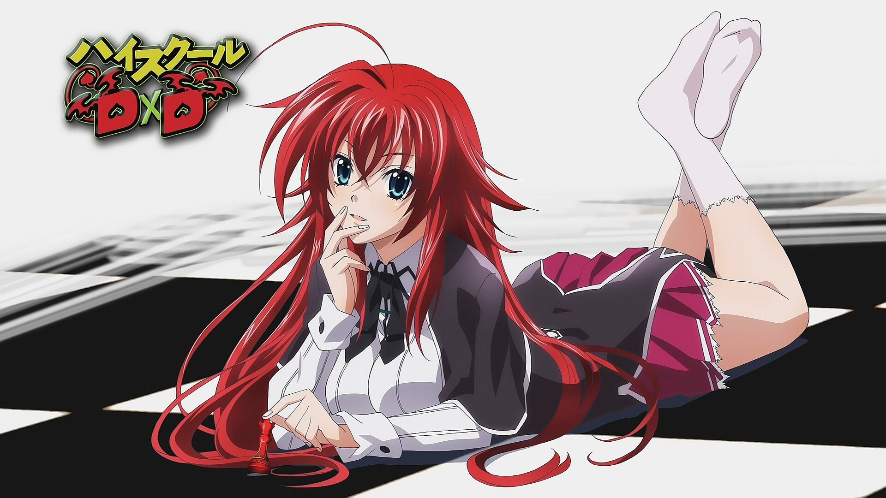

My spirit animal, is the animal I personally admire most, This monkey!
I love her so much, I want to marry her... But I don't know what the offspring would look like and how does it even work...?
A pig and a monkey...

Vlad
My favourite color is white, it's the color of the thing I love most, I love holding people's pockets!
Why you ask? Because I know my place :)
My spirit animal, is the animal I personally admire most, This monkey!
I love her so much, I want to marry her... But I don't know what the offspring would look like and how does it even work...?
A pig and a monkey...
My favourite sport is Quidditch
This is because I just love chasing some balls
The fact that I can put a big stick between my legs to make up for some other parts is just an added bonus
Self explanatory
I aspire to be like this man one day, he is such a good cook!
The way he can handle meat is just amazing, and I hope I can eat his meat one day too!
I challenge you to make your key inputs appear in the box bellow and if you can, make a reset button